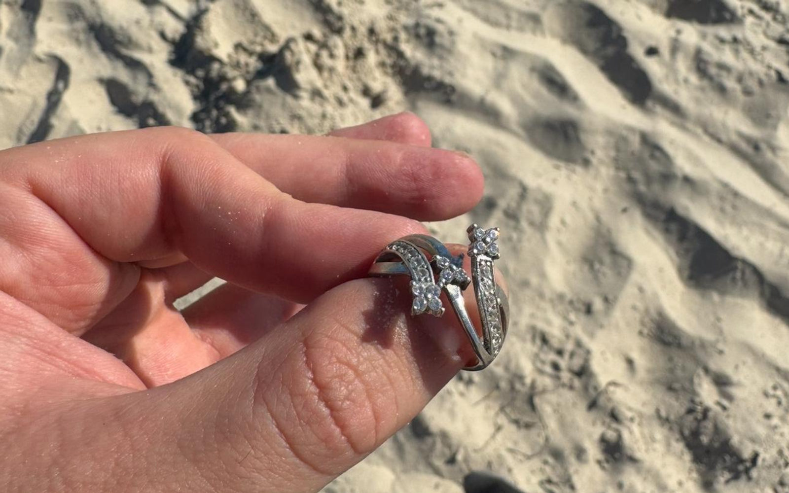
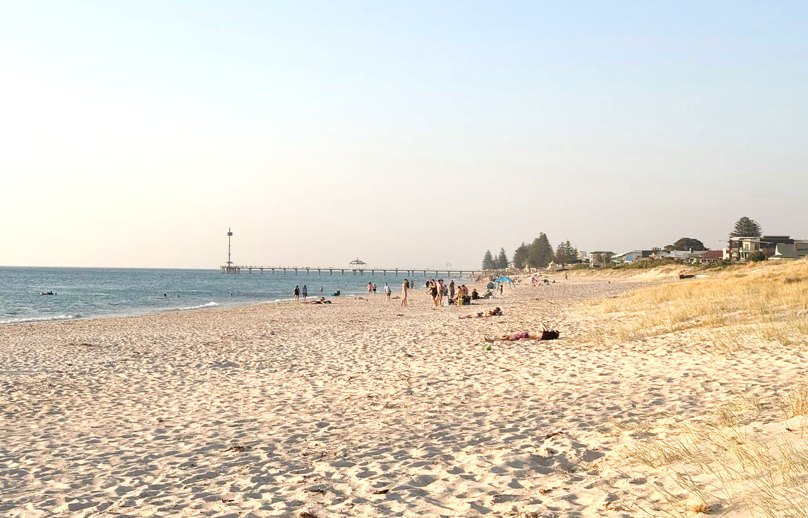

Rings & jewellery
Wedding and engagement rings to everyday favourites.
Some things are too important to give up on.
I’m Thomas. I help find the things you thought were gone.
Personal service. Honest advice. A careful search.
Small things. Unmeasurable meaning.
A wedding day. A person. A moment you carry with you. I bring patience, experience and a metal detector to help you find your way back to it.
Wedding and engagement rings to everyday favourites.
Small pieces with their own stories.
The essentials you need back.
01 / How a lost ring search works
Skip to pricingA methodical search, one signal at a time.
What, where and when. We narrow the area down and agree on the cost.
Overlapping sweeps. Patient listening. A careful search of the agreed area.
Your item is yours. The fee is for my time, never its sentimental value.
Just lost it? Save a map pin, take a photo and note the time.
SEARCH PROCESS ILLUSTRATION · RECOVERY IS NOT GUARANTEED
A local metal detectorist. Not a call centre.
I’ve spent more than five years metal detecting Adelaide’s beaches, parks and lawns. When you get in touch, it’s me you’ll speak to — and me doing the searching.
I’ll listen, give you an honest assessment and tell you when a search doesn’t look worthwhile. No pressure. No promises I can’t keep.
Let’s talk it throughNo percentage of your ring’s value.
No surprise reward fee. Just clear, agreed pricing.
Travel to the agreed location and the first hour of searching.
The callout and search time are payable whether or not your item is found. Recovery cannot be guaranteed.
Talk about your search
Beaches, parks, lawns, gardens and shallow water.
Based in Adelaide’s south. Searching across the metropolitan coast and beyond.
Water searches depend on safe conditions and depth.
Access and permissions are agreed before we start.
No silly questions when it matters to you.
Ask me somethingStop where you are and ask everyone nearby to move slowly. Don’t dig, rake or mow. Drop a pin on your phone’s map, take photos that show landmarks and note the time. Then call or text me on 0431 196 875. There’s more help if you lost it at the beach or on a lawn or in a park.
Same-day searches may be possible. The tide, access, weather and my diary all affect timing, so we’ll agree what’s realistic.
$150 covers the callout and the first hour of searching. If it’s worth carrying on, and only with your approval, extra time is $50 an hour for up to two more hours, so a standard search is $250 at most. The callout and search time are payable whether or not your item is found, and recovery can’t be guaranteed. There’s no deposit and no percentage of your item’s value.
The callout and time spent searching still apply. There’s no guarantee of recovery, but I’ll give you my honest assessment before you commit and keep you informed as I search.
Shallow water may be possible, depending on depth, waves and safe access. Tell me where you were and roughly how deep it was. I’ll confirm whether it’s a search I can take on.
It helps, especially when you can point out exactly where you were. When that isn’t possible, a dropped map pin, photos and a clear description can help narrow the search area.
A metal detector searches for metal, so the material matters. Gold, silver, platinum, titanium and tungsten carbide all respond to a metal detector, but a ring’s size, how deep it is and the ground decide how strong the signal is, or whether there’s a usable signal at all. All-ceramic or silicone rings, and loose stones without a metal setting, aren’t suitable for this type of search. Tell me what yours is made of, or see which ring metals a detector picks up.
Access and any necessary permission must be confirmed first. On suitable grass, I aim to retrieve items with a small plug and replace it carefully. We’ll discuss the ground and any likely disturbance before starting.
No. A recovered item goes straight back to you. The agreed fee is for the search and travel, not for handing your belongings back.
I’m based in Adelaide’s south and search the metropolitan coast from Sellicks Beach to North Haven, plus backyards, parks and ovals across the suburbs. Not sure about your spot? Just ask, or read the beach-by-beach guide.
A little hope starts here
Tell me what you lost and where.
We’ll work out the next step together.
Emailed and not heard back? Call or text 0431 196 875.
A few details will help me understand your search.
I’ll be in touch as soon as I can. If it’s urgent, call or text 0431 196 875.